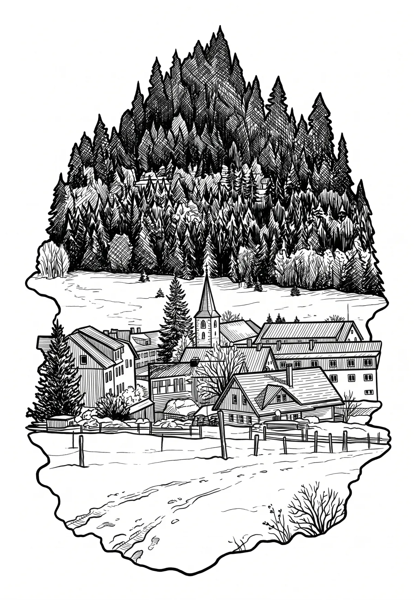

Kvilda
Jihočeský kraj · 1062 m n. m.

město · #038
Kvilda (německy Außergefild) je obec v okrese Prachatice v Jihočeském kraji. Nachází se na území Národního parku Šumava, šestnáct kilometrů jihozápadně od Vimperka. S nadmořskou výškou 1 065 metrů se podle polohy obecního úřadu, pošty a kostela jedná o nejvýše položenou obec v Česku. Nachází se pět kilometrů od pramenů Teplé Vltavy, v místech, kde do ní zleva ústí Kvildský potok.